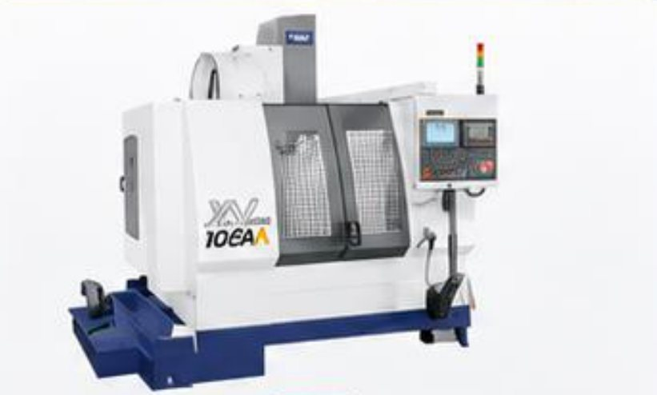
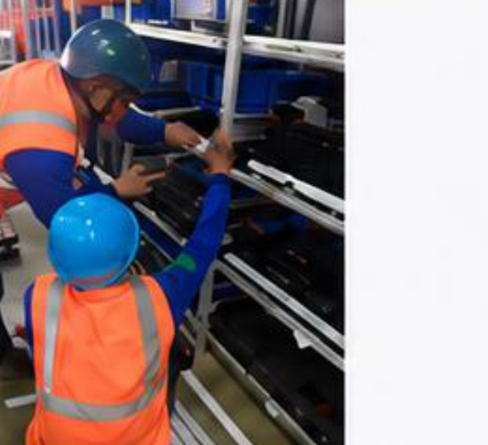

Artikel
Catatan teknis dari pengalaman tim engineering ARASI di lapangan: jig, otomasi, perawatan, dan machining.
Artikel Kami

PLC dan safety interlock pada stasiun kerja robot Fanuc
Menyatukan robot controller, PLC, light curtain, dan pintu pengaman agar robot berhenti otomatis setiap kali area kerjanya dimasuki.
Baca selengkapnya
Perawatan silinder pneumatik dan solenoid valve di area berdebu logam
Langkah sederhana untuk memperpanjang usia silinder dan valve di area machining dan grinding yang penuh debu serta geram logam.
Baca selengkapnya
Verifikasi dimensi sebelum serah terima
Apa saja yang diperiksa sebelum part machining dan jig dikirim ke pabrik klien, dan kenapa laporan inspeksi ikut diserahkan.
Baca selengkapnya
AGV untuk aliran material antar-stasiun
Kapan AGV layak dipakai, apa yang perlu disiapkan di lantai produksi, dan bagaimana troli serta titik docking dirancang.
Baca selengkapnya
Kecepatan spindle dan pemilihan tooling di vertical machining center
Hubungan antara kecepatan spindle, feed, coolant, dan kekakuan fixture terhadap ketelitian bentuk part aluminium.
Baca selengkapnya
Pick to light untuk poka-yoke perakitan
Cara kerja pick to light, komponen yang dibutuhkan, dan hal yang perlu diperhatikan saat memasangnya di rak komponen yang sudah ada.
Baca selengkapnya